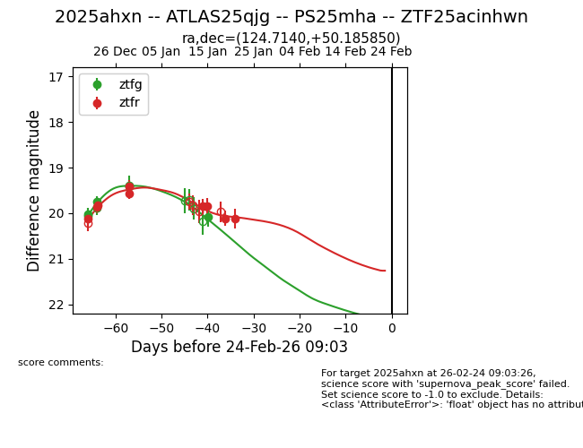
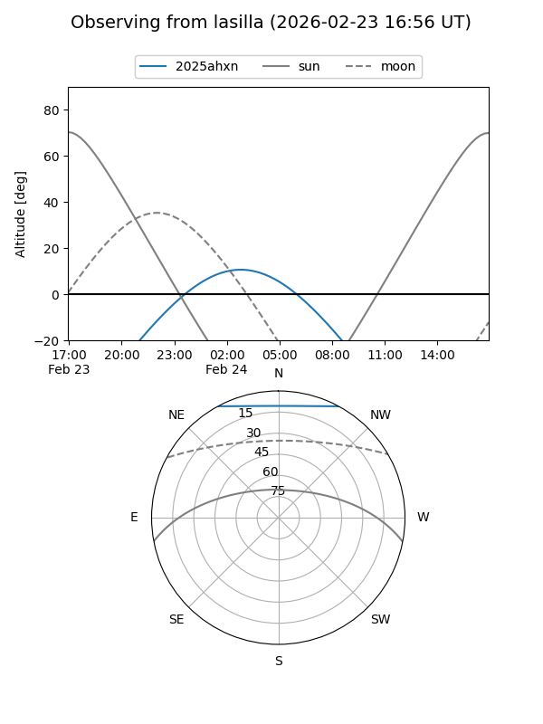
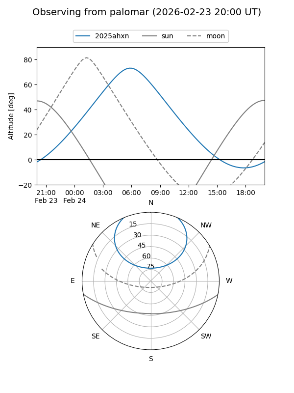
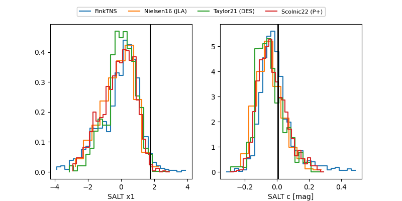

2025ahxn
Target 2025ahxn at 2026-01-15 12:45
Aliases and brokers:
FINK: link
Lasair: link
ALeRCE: link
TNS: link
YSE: link
alt names
ZTF25acinhwn (ztf,fink_ztf)
2025ahxn (tns,yse)
ATLAS25qjg (atlas)
PS25mha (panstarrs)
Coordinates:
equatorial (ra, dec) = 124.7140,+50.18585
equatorial (HMS+DMS) = 08:18:51.37,+50:11:09.06
galactic (l, b) = (168.8798,+34.22080)
Flags:
Photometry:
last ztfg=20.08, ztfr=19.85
7 ztfg, 6 ztfr detections
Lightcurve

Visibility


Additional plots
